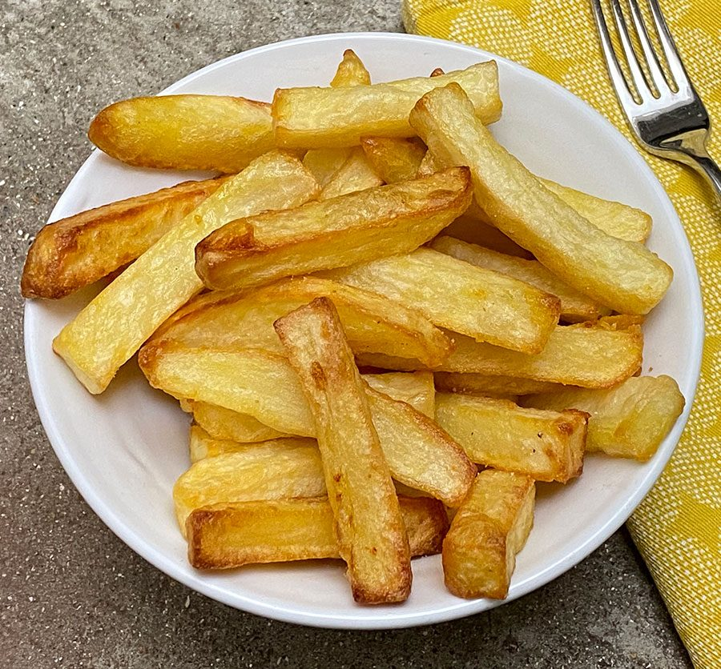

Chips

Description
This recipe teaches you how to make chips easily in an air fryer
Ingredients
- Potatoes
- Vegetable oil or sunflower oil
- Salt
- Malt vinegar
Steps
- Peel and chop potatoes into chips
- Salt and boil a pan of water
- Add 1 tbsp of vinegar to the water
- Add potatoes and simmer for 5 minutes
- Drain water then coat the potatoes in oil
- Cook potatoes in air fryer for 20 minutes at 200c remove halfway through cooking to toss then